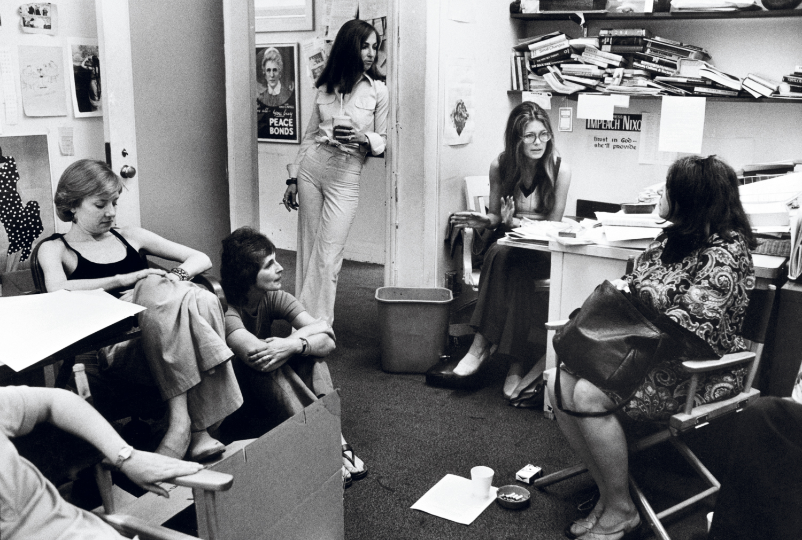

A punto de cumplir medio siglo de historia, la revista 'Ms' fue una pieza clave de la segunda ola feminista norteamericana y la primera publicación que logró que el debate sobre los derechos femeninos trascendiera a los círculos intelectuales y se convirtiera en 'mainstream'. Su vibrante redacción, formada exclusivamente por mujeres, es uno de los escenarios de 'Mrs. America', la popular miniserie que narra la historia de su fundadora, Gloria Steinem, y la de otras feministas famosas como Betty Friedan o Shirley Chisholm y su cruzada por ratificar la Enmienda por la Igualdad de Derechos. Pero también la de la oposición de la activista conservadora Phyllis Schalafly